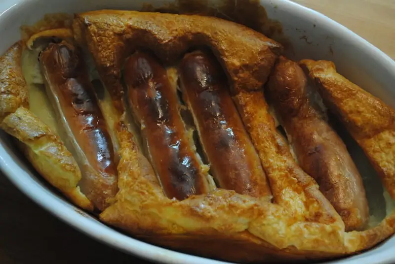

Toad in the Hole

A classic staple in british meals
An easy to follow and cheap recipe to make for students on that glorious student loan. Just like mum
used to make it, in a little as 20 minutes.
Ingredients
Sausages 4
Plain flour 75 g
Eggs 2
Milk 200 ml
Oil 1 tsp
Steps
In a baking dish, drizzle around the oil inside.
Add the sausages and cook in the oven at 200 degrees for 10 minutes.
While the sausages cook, add the flour to a big bowl and whisk in the milk and eggs until you’ve got a runny batter.
Once sausages are partly done, remove from the oven and pour over the batter and return to bake for around 20-30 minute.
Remove the finished dish once the batter has risen and is golden and crisp – keep an eye on it!